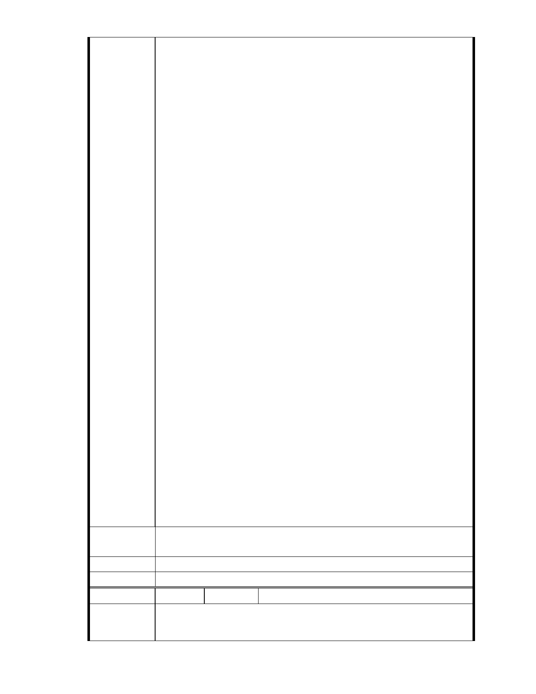

的目的。
‧受保護的陸上／海上景觀：此類型之保護區以對陸上／海上景觀的保
護以及休閒娛樂需求為管理的主要目標。
‧資源管理保護區：此類型之保護區以對自然生態系的永續利用為管理
的主要目標。
因此:上述這六種跟內湖路 5 段土地定義都不相同
實質上這塊 4.6 公頃土地
1.是平地
2.不是上述保護區類型土地.只是被舊法歸類為保護區邊緣平地.等待申請
變更使用.成更綠化.更環保.更淨化人心.比現狀更優質環保的場地
3.諷刺的是 慈濟內湖這塊要開發的平地.一眼望去周圍山坡上 .一半都已
經蓋大樓 公寓許久.甚至是保變住
4.而且是慈濟購入後才開發.
5.目前這幾個號稱團體幾乎是以取代台北市政府.取代都市計劃委委會在
發言. 我在公聽會現場有聽到集會惡意.粗暴.攻擊性語言. 因此願祥和社
會.人心淨化並不全然符合某些人理念及作為!?
6 慈濟無罪 懷璧其罪罷了!
這是極少數人想-假借以鄰為壑的效應破壞鄰里?
然.滄海桑田在舊法歸類為保護區的慈濟內湖園區平地周遭山坡已經蓋了
不少大樓及公寓
在這麼重視環保環境中.
慈濟沒動到山坡.更強化山坡.申請將舊法歸類為保護區邊緣平地.等待申
請變更使用.成更綠化.更環保.更淨化人心.比現狀更優質環保的場地.
慈濟默默耕耘幾十年慈善.環保.社區.教育.醫療.人文....每一個慈濟人最終
皆回歸社區.....人在做...而且事實作不流於空談.......全世界都看的到....
我相信動手做的人.的團體
你要我信任攻擊這種環保落實在源頭團體的人(團體)唉.
我只能說回頭是岸(有誤會趕快相互冰釋).以免壞了那團體前幾年的努力?
又慈濟真的那麼好嗎? 我覺得吃燒餅焉有不掉芝麻 !!
但慈濟是台灣的寶 我引以為向上指引力量的寶!
故慈濟為什麼要持續受這種委屈!
只是為了淨化人心.祥和社會.為了台灣......
建 議 辦 法 我支持慈濟內湖平地部分整理成比保護區更環保綠化場地
市 府 說 明 相關陳情意見將納入本案審查人民意見，依法定程序辦理。
委 員 會 決 議 同編號 1。
編
號 223
陳情人 MA201301240068
陳 情 理 由 看過轉寄的內湖開發案說明，http://youtu.be/xHzwP12KlBI 園區周遭環境早
已開發完，目前園區情況與開發完成圖相較，當然我是雙手贊成開發。
- 277 -